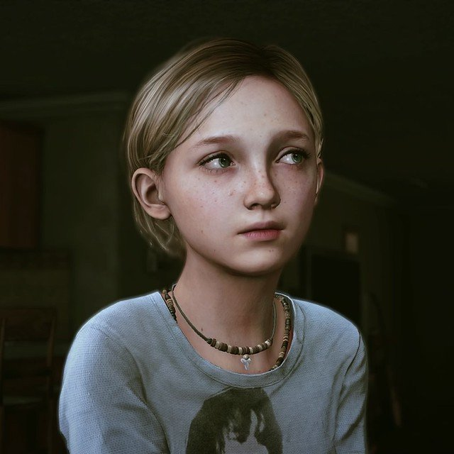
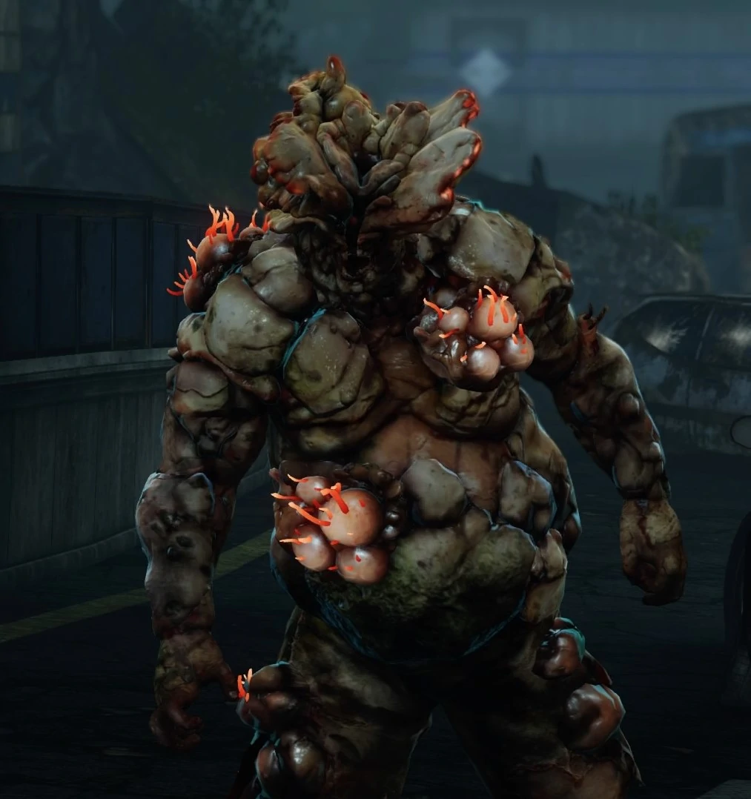

Personagens de The Last of Us
Joel Miller
Mostrar Mais
Protagonista do jogo, possui uma personalidade forte e é um contrabandista no mundo pós apocaliptico, no qual recebe o papel de levar Ellie para uma base dos Vagalumes. Com ela, cria uma ligação muito forte de pai e filha.
Tem 51 anos.
Tem 51 anos.
Ellie Willians
Mostrar Mais
É imune à infecção, carismática e alegre. Adora ler quadrinhos e está tentando chegar aos vagalumes, para que eles consigam achar a cura com a imunidade dela.
Tem 14 anos.
Tem 14 anos.
Tess
Mostrar Mais
Uma endurecida sobrevivente, ela era a "parceira" de longo prazo de Joel. A dupla ganhava a vida como contrabandistas. Ela tinha uma filosofia de "cachorro-come-cachorro".
Tem entre 38 - 42 anos.
Tem entre 38 - 42 anos.
Bill
Mostrar Mais
Homem amargo que mora sozinho em uma cidade do interior, na qual armou diversas armadilhas, tanto para os mortos quanto para os vivos.
Tem entre 35-40 anos.
Tem entre 35-40 anos.

Sarah Miller
Mostrar Mais
Filha de Joel, apesar de não aparecer muito durante o jogo, mostra que tinha uma ótima relação com seu pai.
Tem 14 anos.
Tem 14 anos.

Tommy Miller
Mostrar Mais
Irmão de Joel, os dois se mantiveram juntos para sobreviverem ao início da pandemia, mas se separaram depois por pensarem diferente. Fazia parte dos vagalumes.
Tem 40 anos.
Tem 40 anos.
Marlene
Mostrar Mais
Líder dos rebeldes Vagalumes, ela que contratou Joel e Tess para levarem Ellie para uma base de seu grupo.
Tem 35 - 40 anos.
Tem 35 - 40 anos.
David
Mostrar Mais
Líder de um grupo de sobreviventes canibalistas, ele ameaça os personagens principais da trama.
Tem entre 45 - 50 anos.
Tem entre 45 - 50 anos.
Henry
Mostrar Mais
Um sobrevivente bem preparado para largar coisas que não eram essenciais para a sobrevivência, ele é uma pessoa muito carismática e super protetor com seu irmão mais novo Sam.
Tem 25 anos.
Tem 25 anos.
Sam
Mostrar Mais
Irmão de Henry, Sam é uma criança assustada, mas capaz de se defender quando necessário.
Tem 13 anos.
Tem 13 anos.
Riley Abel
Mostrar Mais
Amiga de Ellie, ela sentia aversão aos militares e era favorável aos Vaga-lumes, tanto que se junta a eles.
Tem 16 anos.
Tem 16 anos.
Maria
Mostrar Mais
Esposa do Tommy, ela que comanda a comunidade de Jackson.
Tem entre 35 - 40 anos.
Tem entre 35 - 40 anos.

Baiacu
Mostrar Mais
Infectado extremamente perigoso, que aguenta muita dano, e que mata suas vítimas com extrema violência.